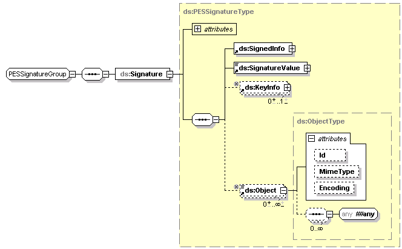
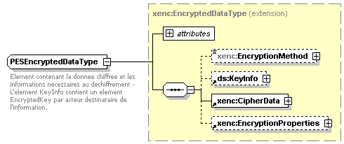

Le PES V2 permet de véhiculer (import du schéma Class_Signature.xsd) des informations de signature électronique sur les niveaux suivants :
L'information de signature respecte les spécifications XML Signature [R4] du W3C (www.W3.org) ainsi que les extensions de format de signatures spécifiées dans le standard européen XML Advanced Electronic Signature (XADES, [R5]) de l'ETSI (www.etsi.org).
Un élément ds:Signature est modélisé au travers du schéma Class_Signature.xsd. Il appartient à l'espace de nom XML Signature (http://www.w3.org/2000/09/xmldsig#). Le préfixe utilisé pour les éléments appartenant à l'espace de noms XMLDSIG est le préfixe "ds:"
L'élément xad:QualifyingProperties appartient à l'espace de noms XADES (http://uri.etsi.org/01903/v1.2.2# ou http://uri.etsi.org/01903/v1.1.1#). Le préfixe utilisé pour les éléments appartenant à l'espace de noms XADES est le préfixe "xad:".
Les signatures sont des signatures enveloppées, conformément à la norme XML Signature.

La génération de la signature est effectuée dans tous les cas comme suit :
L'algorithme de mise sous forme canonique appliqué à l'élément ds:SignedInfo est fixé à :
<ds:CanonicalizationMethod Algorithm="http://www.w3.org/2001/10/xml-exc-c14n#"/>
L'algorithme de signature est fixé à :
<ds:SignatureMethod Algorithm="http://www.w3.org/2000/09/xmldsig#rsa-sha1"/>
ou
<ds:SignatureMethod Algorithm="http://www.w3.org/2001/04/xmldsig-more#rsa-sha256"/>
Le premier élément ds:Reference identifie l'objet comportant des données à signer (PES_Aller, Bordereau, PJ)
Il est constitué de :
L'attribut obligatoire URI pointe selon les cas :
L'attribut obligatoire ds:Transforms comprend deux éléments ds:Transform :
Une empreinte du résultat de ces transformations successives est ensuite calculée, en suivant l'algorithme défini en attribut obligatoire de ds:DigestMethod. Cet algorithme est fixé à :
<ds:DigestMethod Algorithm="http://www.w3.org/2000/09/xmldsig#sha1"/>
ou
<ds:DigestMethod Algorithm="http://www.w3.org/2001/04/xmlenc#sha256"/>
L'élément obligatoire ds: DigestValue contient alors la valeur de l'empreinte ainsi créée.
Le deuxième élément ds:Reference identifie les propriétés signées.
Il est constitué :
L'attribut obligatoire URI pointe sur l'attribut Id de l'élément xad:SignedProperties (cf. ici)
L'attribut obligatoire Type est fixé à la valeur "http://uri.etsi.org/01903/v1.1.1#SignedProperty"
L'attribut obligatoire ds:Transforms comprend un élément ds:Transform indiquant l'algorithme de mise sous forme canonique à appliquer aux données.
<ds:Transforms Algorithm="http://www.w3.org/2001/10/xml-exc-c14n#"/>
Une empreinte du résultat de cette transformation est ensuite calculée, en suivant l'algorithme défini en attribut obligatoire de ds:DigestMethod
. Cet algorithme est fixé à :
<ds:DigestMethod Algorithm="http://www.w3.org/2000/09/xmldsig#sha1"/>
ou
<ds:DigestMethod Algorithm="http://www.w3.org/2001/04/xmlenc#sha256"/>
L'élément obligatoire ds:DigestValue contient alors la valeur de l'empreinte ainsi créée.
L'élément xad:QualifyingPropertiesappartient à l'espace de noms XADES (http://uri.etsi.org/01903/v1.1.1#)
Il est constitué de :
Est composé de :
L'élement xad:SigningTime contient la date et l'heure de création de l'élément de signature.
L'élément xad: SigningCertificate contient un élément xad:Cert lui-même constitué de :
L'élément xad:CertDigest contient l'empreinte du certificat de signature ainsi que l'algorithme utilisé pour calculer cette empreinte. Cet algorithme est fixé à :
<ds:DigestMethod Algorithm="http://www.w3.org/2000/09/xmldsig#sha1"/>
ou
<ds:DigestMethod Algorithm="http://www.w3.org/2001/04/xmlenc#sha256"/>
L'élément obligatoire xad:IssuerSerial contient le DN (DistinguishedName) du certificat de l'autorité de certification émettrice du certificat de signature (ds:X509IssuerName) ainsi que le numéro de série du certificat de signature (ds:X509SerialNumber)
L'élément xad:SignaturePolicyIdentifier est constitué de l'élement xad:SignaturePolicyId, qui est lui-même constitué de :
L'élément xad:SigPolicyId contient :
L'élément xad : SignatureProductionPlace contient :
L'élément xad:SignerRole contient un élément xad:ClaimedRoles lui-même constitué d'un élément xad:ClaimedRole. Ce dernier contient une chaîne de caractères indiquant le rôle du signataire.
L'élément xad:UnsignedSignatureProperties contient :
L'élément xad:SignatureTimestamp contient :
L'élément xad:HashDataInfo contient :
Ces éléments contiennent les informations nécessaires à l'extraction et la mise sous forme canonique suivant l'algorithme http://www.w3.org/2001/10/xml-exc-c14n# de l'élément ds:SignatureValue de la signature horodatée.
L'élément xad:EncapsulatedTimeStamp contient un jeton d'horodatage conforme à la RFC 3161, encodé en base64.
Le bloc Chiffrement contient les éléments de chiffrement du fichier contenant les données de pièces jointes, quand ces dernières sont véhiculées par le flux.
Le format de chiffrement respecte les spécifications XML Encryption [R5] du W3C (www.W3.org) :

Un élément EncryptedData est modélisé au travers du schéma Class_Chiffrement.xsd. Il appartient à l'espace de nom XML Encryption (http://www.w3.org/2001/04/xmlenc#). Le préfixe utilisé pour les éléments appartenant à l'espace de noms XMLENC est le préfixe "xenc:"
L'élément xenc:EncryptedData est constitué de :
L'élément obligatoire xenc:CipherData contient la donnée métier chiffrée avec une clé de chiffrement symétrique, suivant l'algorithme précisé dans l'élément xenc:EncryptionMethod.
L'élément obligatoire xenc:EncryptionMethod possède un attribut Algorithm indiquant l'algorithme de chiffrement symétrique utilisé, à savoir 3-DES.
<xenc:EncryptionMethod Algorithm="http://www.w3.org/2001/04/xmlenc#tripledes-cbc"/>
L'élément obligatoire ds:KeyInfo contient, pour chaque destinataire de la donnée, un élément xenc:EncryptedKey contenant la clé de déchiffrement symétrique, elle-même chiffrée avec le certificat du destinataire.
L'élément xenc:EncryptedKey est constitué de :
L'élément obligatoire xenc:CipherValue contient la valeur de la clé de déchiffrement symétrique, elle-même chiffrée avec le certificat du destinataire suivant l'algorithme asymétrique indiqué dans l'élément xenc:EncryptionMethod.
L'attribut obligatoire xenc:EncryptionMethod indique l'algorithme de chiffrement asymétrique utilisé pour chiffrer la clé symétrique, à savoir RSA 1.5 :
<xenc:EncryptionMethod Algorithm="http://www.w3.org/2001/04/xmlenc#rsa-1_5"/>
L'élément obligatoire xenc:KeyInfo contient le certificat du destinataire auquel cette version de la clé symétrique chiffrée et destinée.
Parmi les informations obligatoires d'une signature électronique et qui doivent être rendues lisibles :
Ces éléments sont issus des blocs de la signature électronique décrite supra.
Il convient d'y ajouter le montant cumul annuel pour chaque bordereau signé.
En l'absence de l'un ou de tous ces éléments, la signature est considérée comme invalide en terme fonctionnel et les bordereaux doivent être rejetés.
La liste des certificats acceptés est la suivante (disponible sous format open document ici).
Alias name: ACD_CertinomisClasse3G3.cer Alias name: CSF-Classe-III-Sign-Et-Crypt-2016.cer Alias name: ACD_Certinomis_1_etoile-2.cer Alias name: CSOV.cer Alias name: ACD_Certinomis_2_etoiles-2.cer Alias name: CSOVRacine.cer Alias name: ACF-ST-P.cer Alias name: Certeurope_Root_CA.cer Alias name: ACR-ST.cer Alias name: CertiNomis_Classe3_sub.cer Alias name: ACR_Certinomis.cer Alias name: CertiNomis_root.cer Alias name: ACR_CertinomisG2.cer Alias name: Certification_ChamberSign_France_root.cer Alias name: ACRacine_groupe_CREDIT_AGRICOLE_v1.crt Alias name: ChamberSignFrance.cer Alias name: AC_AGENTS.cer Alias name: ChamberSignFranceAC1Etoile.cer Alias name: AC_Certeurope_Classe_3Plus.cer Alias name: ChamberSignFranceAC2Etoiles.cer Alias name: AC_Certigreffe_Classe_3Plus_sub.cer Alias name: ChamberSignFranceAC3Etoiles.cer Alias name: AC_EASY.cer Alias name: ChamberSign_France_Initio_sub.cer Alias name: AC_IAS1_C.cer Alias name: KEYNECTIS_CDS_CA.cer Alias name: AC_IAS1_D.cer Alias name: KEYNECTIS_ICS_ADVANCED_Class_3_CA.cer Alias name: AC_IAS1_E.cer Alias name: KEYNECTIS_ICS_CA.cer Alias name: AC_MINEFI_B.cer Alias name: KEYNECTIS_QUALIFIED_CDS.cer Alias name: AC_PRIME.cer Alias name: KEYNECTIS_ROOT_CA.cer Alias name: AC_Racine_G3.cer Alias name: LCL_AuthentysEntreprise.crt Alias name: AC_Racine_groupe_CREDIT_AGRICOLE_v2.509 Alias name: SG_TRUST_SERVICES_AUTHENTIFICATION_ET_CHIFFREMENT_DE_CLEF_sub.cer Alias name: AC_Racine_groupe_CREDIT_AGRICOLE_v2.cer Alias name: SG_TRUST_SERVICES_RACINE.cer Alias name: AC_STANDARD.cer Alias name: SG_TRUST_SERVICES_RACINE2.cer Alias name: AC_racine_Helios_DGFiP.cer Alias name: SG_TRUST_SERVICES_RACINE_PRIS.cer Alias name: AC_signature_Helios_DGFiP.cer Alias name: SG_TS_2_ETOILES.cer Alias name: ACcertigna.crt Alias name: SG_TS_PRIS.cer Alias name: ACcertignaidpris2.crt Alias name: SIGN-TOKEN-CLICK_AND_TRUST.cer Alias name: ACcertignaidpris2pro.crt Alias name: ac_certeurope_3P_v2.cer Alias name: ACcertignaidpris3.crt Alias name: atos_sub_TelePro_Entreprise.cer Alias name: ACcertignaidpris3pro.crt Alias name: banque_populaire.cer Alias name: ACcertignaidprispro.crt Alias name: ca-certificat.cer Alias name: AUTH-TOKEN-CLICK_AND_TRUST.cer Alias name: ca-root-credit-agricole.crt Alias name: Adobe_root_CA.cer Alias name: cdc-legalia.crt Alias name: Atos_Racine_Mediacert.cer Alias name: cdc-racine.crt Alias name: BANQUE_POPULAIRE-AUTORITE_DE_CERTIFICATION.cer Alias name: certeurope_advanced_v3.cer Alias name: BANQUE_POPULAIRE-CLICK_AND_TRUST-PAIEMENTS_SECURISES.cer Alias name: certeurope_advanced_v4.cer Alias name: BANQUE_POPULAIRE_AUTORITE_DE_CERTIFICATION.crt Alias name: certeurope_root_ca_2.cer Alias name: BANQUE_POPULAIRE_CLICK_AND_TRUST_PAIEMENTS_SECURISES.crt Alias name: certeurope_root_ca_3.cer Alias name: BANQUE_POPULAIRE_CLICK_AND_TRUST_TVA.crt Alias name: certificatACgtce.cer Alias name: BNPPARIBAS-ROOTAC.cer Alias name: certigreffe_v2.cer Alias name: BNP_PARIBAS_AUTHORITY_ENTERPRISE.cer Alias name: natexis_banques_populaires_nxbp_cesam_relations_fiscales_ac.cer Alias name: CA_Certificat.crt Alias name: certificatACracine.cer Alias name: CA_LCL_Certificat_RGS_Usage_Mixte.crt Alias name: identca_rootca.der Alias name: CA_LCL_Certificat_RGS_Usage_Separe.509 Alias name: identityplusca_rootca.der Alias name: CA_LCL_Certificat_RGS_Usage_Separe.cer Alias name: EU-SIGN-CLICK_AND_TRUST.cer Alias name: CA_root_Credit_Agricole.cer Alias name: ACF_PORTEURS_ACT_V2_Qualif.cer Alias name: CCF_Elys_CERTIFICATION.cer Alias name: AC_DGFIP_SHA2.cer Alias name: CERTIFICATION_AUTHORITY-CLICK_AND_TRUST.cer